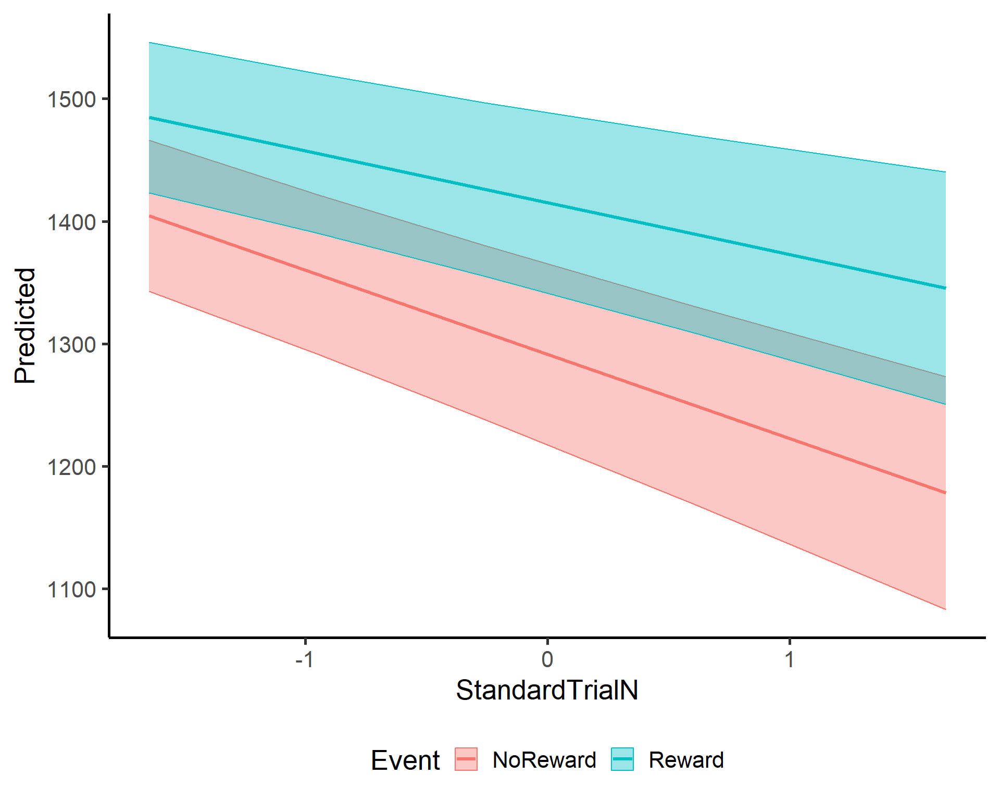

In this tutorial, we’re going to take our analysis skills to the next level. We’ll move beyond simply hunting for significant p-values and discover how to extract rich, meaningful information from our models. While we’ll be using a linear mixed effects model as our example, the techniques we’ll explore can be applied to many different types of models (with some adjustments, of course!).
Be ready!! We’ll explore how to extract and interpret predictions from your model, before learning how to transform these predictions into meaningful statistical insights that tell the complete story of your eyetracking data.
Note
In this tutorial, we will rely heavily on the modelbased package functions. Modelbased is part of the easystats package collection that we love and have already introduced!!
The modelbased package provides lots of documentation and vignettes about its functions. We strongly suggest you visit the package website if you want to learn more tricks about model estimates.
Here we won’t have the time to cover all the amazing possibilities of the package, but we will try our best to give you an introduction to the process.
We also want to mention that modelbased is not the only option for this kind of estimates. There are different packages like emmeans and marginaleffects (these two are actually called in the background by modelbased).
Beyond p-values: Understanding Your Effects
One of the coolest and most important aspects of linear models (in my opinion!) isn’t just the p-values you get for each predictor. Don’t get me wrong—those are important and tell you where there is an effect. But after knowing where the effect is, the exciting part is trying to understand what our effect actually is. In other words, how can it be described?
Here come the PREDICTIONS.
But.. what are predictions?? They’re essentially what our model “thinks” should happen under certain conditions!
The main idea is that:
We collect our data - This includes all our eye-tracking measurements with their natural variability and noise
We fit our model - We create a mathematical equation that best captures the relationship between our variables
We use this equation to make predictions - This is the powerful part! We can now:
predict values for conditions we’ve tested in our experiment
predict values for conditions that fall within the range of our data but weren’t explicitly tested
Sounds a little confusing… but really cool right?? Let’s dive in, everything will be clearer!!
Model
First things first, what do we need?? Well, a model…
I’ll be brief here as you should already be familiar with this. Before diving in, we import relevant libraries, read the data, set categorical variables as factors, standardize the continuous variables, and finally run our model. One difference between this model and our previous tutorial’s model is that we’ve included an additional interaction with SES (Socio-Economic Status). This variable is a factor with 3 levels: high, medium, and low. This more complex model will be useful to fully experience the model’s predictions and estimates.
library(lme4)library(lmerTest)library(easystats)library(tidyverse)df=read.csv("../../resources/Stats/Dataset.csv")df$Id=factor(df$Id)# make sure subject_id is a factordf$SES=factor(df$SES)# make sure subject_id is a factordf$Event=factor(df$Event)# make sure subject_id is a factordf$StandardTrialN=standardize(df$TrialN)# create standardize trial columnmod=lmer(LookingTime~StandardTrialN*Event*SES+(1+StandardTrialN|Id), data=df)summary(mod)
This is not a tutorial about the model results‚Äîyou should be already able to understand it, don‚Äôt you? üòâ
Predictions
Now we can extract the predictions from our model. We want to see what our model predicts the values of Looking time would be for each row of our dataframe. Here is where the Easystats package (specifically the modelbased sub-package) comes to the rescue with the function estimate_expectation().
Look!! The function gave us a new dataframe with all the levels of Event and of StandardTrialN and ID that we had in our dataframe. OK, OK, I will agree….this looks so similar to the original dataframe we had…so why even bother???? Can’t we just use the original dataframe?? Well because the predictions represent what our model thinks the data should look like based on the patterns it discovered, after accounting for random effects and noise!
Let’s visualize the difference between the raw data and the predictions
As you can see, the raw data and the predicted data are very similar but not the same!! The predictions represent our model’s “best guess” at what the looking times should be based on the fixed effects (StandardTrialN, Event and SES) and random effects (individual participant differences). This smooths out some of the noise in the original data and gives us a simpler picture of the underlying patterns!
Predictions for reference values
So far, we’ve extracted predictions based on our raw data. While useful for comparing model predictions with actual observations, this approach has limitations when we want to visualize and understand core patterns.
When visualizing model results using predictions from every observation:
Each participant would have their line
Individual variations would create visual clutter
The main effects could get lost in the noise
We need a way to highlight the key patterns our model has discovered! Here comes the by argument to the rescue!!! The by argument allows us to create predictions on a reference subset of predictor values, focusing only on the variables we’re interested in exploring.
This gives us predictions for each level of the Event and SES factor while:
Setting StandardTrialN to its mean value
SES is set to “high”. This is because the function can’t meaningfully “average” a categorical variable like SES, so it uses its reference level (“high” in our case) for making predictions.
The result? A representation of looking time for each Event type, perfect for visualizing the main effect!
Tip
In these examples (and the next ones), we explored a very simple case. We just passed the predictors we were interested in, and the function gave us all the levels of that predictor. However, we can also specify exactly which level we want instead of having the function automatically return all the ones it thinks are relevant. There are different ways to do this - the simplest is:
estimate_expectation(mod, by =c("Event = 'NoReward'", "SES"))
Warning: Some factors in the data have only one level. Cannot compute model
matrix for standard errors and confidence intervals.
Model-based Predictions
Event | SES | Predicted
-----------------------------
NoReward | high | 1302.88
NoReward | low | 1345.96
NoReward | medium | 1211.81
Variable predicted: LookingTime
Predictors modulated: Event = 'NoReward', SES
Predictors controlled: StandardTrialN (-0.17)
When we pass a continuous variable to the by argument, the function automatically extracts a range of values across that predictor. We can control how many values to sample using the length parameter. For example, setting length=3 will give us predictions at just three points along the range of our continuous variable, while a larger value would provide a more detailed sampling.
estimate_expectation(mod, by ='StandardTrialN', length=3)
This creates predictions for all combinations of Event levels and StandardTrialN values - perfect for visualizing interaction effects!
Tip
In this tutorial, we focused on the estimate_expectation() function. However, modelbased offers additional functions that return similar things but with slightly different defaults and behaviors.
For example, if we run estimate_relation(mod), instead of returning predictions based on the values in our original dataframe, it will automatically return predictions on a reference grid of all predictors. This is equivalent to running estimate_expectation(mod, by = c('StandardTrialN','Event')) that we saw before.
These functions accomplish very similar tasks but may be more convenient depending on what you’re trying to do. The different function names reflect their slightly different default behaviors, saving you time when you need different types of predictions. Don’t be intimidated by these differences - explore them further at the modelbased website to learn them better.
Plot
All these predictions allow for simple direct plotting. These are ggplot objects that can be customized by adding other arguments (like we are doing here where we are changing the theme ). Note that there’s a limit to how well these automatic plots handle complexity - with too many predictors, you might need to create custom plots instead.
Est_plot=estimate_expectation(mod, by =c('StandardTrialN','Event'), length=10)Est_plot
In this plot, we can see the predicted values for looking time for the two Events changing over the StandardTrialN. The lines represent our model’s best estimates, while the shaded areas show the confidence intervals around these estimates.
Important
In this plot the predictions are extracted with the SES (socioeconomic status) being held at its high level! In a model with multiple predictors, predictions are always made with the other predictors fixed at specific values (typically their mean or reference level). Always be aware of what values other variables are being held at when interpreting your plots.
The question !!
OK, I hope by this point you have a solid grasp of predictions and how to extract them at specific predictor levels! But wait - did you notice something interesting in the messages that modelbased has been giving us?
The values we’ve extracted for the Event variable are always referenced to one specific level of SES. For example, when we look at the effect of Reward vs. NoReward events, we’re seeing this effect specifically when SES is at its High level (or whatever reference level was used).
But what if that’s not what we want? What if we want to know the effect of Event overall, not just at a specific level of SES? What if we want to understand the “main effect” of Event, averaging across all SES levels?
This is where estimate_means() comes to the rescue! üí™
I hope you now have a solid grasp of predictions and how to extract them at specific predictor levels! This powerful approach gives you the flexibility to explore and visualize your eye-tracking data in meaningful ways.
Estimate means
Let’s now explore a different yet related function: estimate_means().
As its name suggests, estimate_means() allows you to extract estimated means from your model. But what does this actually mean? (Yes, lots of “means” in this explanation!)
This function:
Generates predictions for all the reference levels of a model’s predictors
Averages these predictions to keep only the predictors we are interested in
Think of it as a streamlined way to answer the question: “What is the average looking time for each level of my factor, according to my model?” Let’s see it in action!!
Estimated Marginal Means
Event | Mean | SE | 95% CI | t(644)
--------------------------------------------------------
NoReward | 1286.88 | 70.16 | [1149.11, 1424.66] | 18.34
Reward | 1411.22 | 70.12 | [1273.54, 1548.90] | 20.13
Variable predicted: LookingTime
Predictors modulated: Event
Predictors averaged: StandardTrialN (-0.17), SES, Id
Now you might be thinking: “Wait, these look like the same values we saw before! Are you explaining the same thing?” Well, yes and no. While the results look similar in this particular case, the underlying process is different.
The difference becomes clearer with this example:
estimate_means(mod, by ='StandardTrialN', length=6)
Check the information message! This is fundamentally different from before. Previously, the estimate_expectation() function was setting Event to its reference level. Now instead, the function extracts predictions for all levels of Event and then averages across them! So these predictions represent the effect of StandardTrialN averaged across both Reward and NoReward conditions, giving you a more comprehensive view.
So while the results sometimes are similar with the estimate_expectation() the functions are doing different things!
Plot
The estimate_means() function also comes with its own built-in plotting capability, automatically generating a clean ggplot visualization of your estimated means.
This creates a simple yet informative ggplot showing our estimated means with confidence intervals. Of course, we can also use the dataframe that the function returns to create more customized and refined plots if needed.
Estimate contrasts
We‚Äôve successfully extracted the estimated means for our predictors - awesome job! üéâ
But there’s something important missing. While we now know the estimated looking times for each level, we don’t yet have formal statistical comparisons between these levels. For example, is the difference between mean values in Reward condition and NoReward condition statistically significant?
This is where estimate_contrasts() comes to the rescue! Let’s see it in action:
Marginal Contrasts Analysis
Level1 | Level2 | Difference | SE | 95% CI | t(644) | p
--------------------------------------------------------------------------
Reward | NoReward | 124.33 | 4.34 | [115.82, 132.85] | 28.66 | < .001
Variable predicted: LookingTime
Predictors contrasted: Event
Predictors averaged: StandardTrialN (-0.17), SES, Id
p-values are uncorrected.
What we’re doing here is simple but powerful:
We pass our model to the function
We specify which predictor we want to compare (Event)
The function returns the difference between the means of the predictors with statistical tests
The results show us that the difference between Reward and NoReward is positive (meaning looking time is higher for Reward) and the p-value indicates this difference is statistically significant! All of this in just one line of code - how convenient!
Note
In this example, Event has only 2 levels (Reward and NoReward), so we already knew these levels differed significantly from examining our model summary. However, estimate_contrast() gives us something more valuable: the pairwise difference between all the levels of the selected predictors with their
This function becomes particularly powerful when dealing with predictors that have multiple levels. Imagine having a predictor with 10 different levels (such as various stimulus types or experimental conditions) - estimate_contrast() would automatically calculate all possible pairwise comparisons between these levels, saving you considerable time and effort.
Remember that if you have multiple levels in predictors you will need to adjust the p-value for multiple comparisons. You can do that by passing the argument p_adjust = 'hochberg' to the function. With this the contrasts will be adjusted for multiple comparisons. There are different adjustment methods - check the function arguments.
Here we give a small example using a dataset that is included with R:
contast_model_example=lm(Sepal.Length~Species, data =iris)estimate_contrasts(contast_model_example, contrast ='Species',p_adjust ='hochberg')
See?? We have all the comparison between the available level of Species
Plot
estimate_contrast() has a plotting function as well! However, it’s slightly more complex as the plot function requires both our estimated contrasts and means. If we pass both, the plot will show which level is different from the other using lighthouse plots - visualizations that highlight significant differences between groups.
While estimate_contrast() is usually very useful for checking differences between levels of a categorical variable, it can also be used to estimate contrasts for continuous variables. However, where in our opinion the function really shines is when examining interactions between categorical and continuous predictors like we have in our model!!!
ContrastbyTrial=estimate_contrasts(mod, contrast ='Event', by ='StandardTrialN', p_adjust ='hochberg')ContrastbyTrial
While we’ve been using contrast to specify one predictor and by for another, estimate_contrasts() is more flexible than we’ve shown. The contrast = argument can accept multiple predictors, calculating contrasts between all combinations of their levels. You can also mix and match with multiple predictors in contrast = while still using the by = argument to see how these combined contrasts change across levels of another variable. While this generates many comparisons at once (which isn’t always desirable), it can be valuable for exploring complex interaction patterns in your data.
The word is your contrast!
This gives us the contrast between the levels of Event for a set of values of StandardTrialN. So we can check whether the difference between Reward and NoReward actually changes over the course of trials!! I’ll plot it to make it simpler to understand:
This plot shows that the two levels are always significantly different from each other (the confidence intervals never touch the dashed zero line) and that the difference is always positive - looking time for Reward is consistently higher than for NoReward across all trial numbers. SUUPER COOL EH!!! I agree!!
Contrast of slopes
OK now we know the difference between levels of Event and also how this difference may change over time… the last step? We could check whether the slopes of StandardTrialN is different between the two conditions!
To do so, we can again use the estimate_contrast() function but inverting the arguments we used last time. So StandardTrialN moves to the contrast argument and Event goes to the by argument. Super easy:
estimate_contrasts(mod, contrast ='StandardTrialN', by ='Event')
Marginal Contrasts Analysis
Level1 | Level2 | Difference | SE | 95% CI | t | p
----------------------------------------------------------------------
Reward | NoReward | 24.06 | 4.53 | [15.18, 32.94] | 5.31 | < .001
Variable predicted: LookingTime
Predictors contrasted: StandardTrialN
Predictors averaged: StandardTrialN (-0.17), SES, Id
p-values are uncorrected.
This shows us that the effect of StandardTrialN is actually different between the two levels. This is something we already knew from the model summary (remember the significant interaction term?), but this approach gives us the precise difference between the two slopes while averaging over all other possible effects. This becomes particularly valuable when working with more complex models that have multiple predictors and interactions.
Estimate slope
I know we’ve covered a lot of ground already, but there’s one more important function worth introducing: estimate_slope(). While estimate_contrast() allows the comparison between means, estimate_slope(), is designed for slopes. As the name suggests, it calculates the averages of coefficients (slopes) in your outcome variable for each unit increase in your predictor. This helps you, for example, to understand how quickly looking time changes across trials..
estimate_slopes(mod, trend ='StandardTrialN')
Estimated Marginal Effects
Slope | SE | 95% CI | t | p
-------------------------------------------------
-50.37 | 15.34 | [-80.43, -20.30] | -3.28 | 0.001
Marginal effects estimated for StandardTrialN
Type of slope was dY/dX
This tells us that the average effect of StandardTrialN is -50.46 (negative) and it is significantly different from 0. This means the looking time doesn’t remain constant across trials but significantly decreases as trials progress.
Important
You may be thinking… “Wait, isn’t this information already in the model summary? Why do I need estimate_slopes()?” If you are asking yourself this question, think back to the Linear models tutorial!!
What the model summary shows: The coefficient for StandardTrialN in the summary (-67.118) represents the slope specifically for the NoReward condition. This is because in linear models, coefficients are in relation to the intercept, which is where all predictors are 0. For categorical variables, 0 means the reference level (NoReward in this case).
What estimate_slopes() shows: The value from estimate_slopes() (-50.46) gives us the average slope across both Event types (Reward and NoReward).
This is why the two values don’t match! One is the slope for a specific condition, while the other is the average slope across all conditions. Super COOL right??
We can also check if there are differences in slopes
Factor x Continuous
Similar to the estimate_contrast function, estimate_slopes really shines when exploring interactions between continuous and categorical variables.
Remember! Our model indicated an interaction between StandardTrialN and Event, which means the rate of change (slope) should differ between the two Event types. However, from just knowing there’s an interaction, we can’t determine exactly what these slopes are doing. One condition might show a steeper decline than the other, one might be flat while the other decreases, or they might even go in opposite directions. The model just tells us they’re different, not how they’re different (or at least it is not so simple)
To visualize exactly how these slopes differ, we can include Event with the by argument:
Slopes=estimate_slopes(mod, trend ='StandardTrialN', by ='Event')Slopes
Estimated Marginal Effects
Event | Slope | SE | 95% CI | t | p
--------------------------------------------------------------
NoReward | -63.64 | 18.86 | [-100.60, -26.68] | -3.38 | < .001
Reward | -39.58 | 18.62 | [ -76.08, -3.08] | -2.13 | 0.034
Marginal effects estimated for StandardTrialN
Type of slope was dY/dX
Now we get the average effect for both Events. So we see that both of the lines significantly decrease!
Here we see that the slopes for both Event types are negative (below zero) and statistically significant (confidence intervals don’t cross the dashed zero line). This confirms that looking time reliably decreases as trials progress, regardless of whether it’s a Reward or NoReward event.
Complex plotting
We’ve covered a lot in this tutorial, and I know you might be getting tired! But let me add one final important skill: creating custom visualizations of your model predictions.
As we’ve seen throughout this tutorial, most functions in the modelbased package include handy plotting capabilities that generate nice ggplots. These built-in plots are great for quick visualization and are easily customizable.
But… there is always a but… sometimes you’ll need more control, especially when you want to combine multiple effects in a single visualization, or your model has complex interactions.
When built-in plotting functions aren’t enough, we need to generate our own visualizations. But what should we plot? The raw data? Of course not! As you’ve learned throughout this tutorial… we should plot PREDICTIONS! While estimate_relation() is useful, I want to show you an even more flexible approach by breaking down how estimate_relation() works. This way, you’ll be prepared for any visualization challenge, even with the most complex models.
Datagrid
The first step in custom plotting is creating the right reference grid for your predictions. We’ll use the get_datagrid() function, which takes your model as its first argument and the by = parameter to specify which predictors you want in your visualization.
Let’s extract a reference grid for our StandardTrialN * Event interaction:
get_datagrid(mod, by =c('Event', 'StandardTrialN'))
Visualisation Grid
Event | StandardTrialN | SES | Id
-------------------------------------
NoReward | -1.65 | high | 0
NoReward | -1.28 | high | 0
NoReward | -0.92 | high | 0
NoReward | -0.55 | high | 0
NoReward | -0.18 | high | 0
NoReward | 0.18 | high | 0
NoReward | 0.55 | high | 0
NoReward | 0.92 | high | 0
NoReward | 1.28 | high | 0
NoReward | 1.65 | high | 0
Reward | -1.65 | high | 0
Reward | -1.28 | high | 0
Reward | -0.92 | high | 0
Reward | -0.55 | high | 0
Reward | -0.18 | high | 0
Reward | 0.18 | high | 0
Reward | 0.55 | high | 0
Reward | 0.92 | high | 0
Reward | 1.28 | high | 0
Reward | 1.65 | high | 0
Maintained constant: SES
Looking at the output, you’ll see we get both levels of Event (Reward and NoReward) and a range of values for StandardTrialN (10 values by default spanning the range of our data). Notice that the Id column is set to 0. This is how the function indicates that random effects aren’t included—we’re focusing on the fixed effects that represent the “average response” across all subjects.
Caution
Different models declare non-level for the random effects in different ways, but datagrid will adapt to the specific model you are running. Just do not be scared if the values are not 0.
The datagrid is where we can really flex our customization muscles. Instead of accepting the default values, we can request specific levels of a factor, custom ranges for continuous variables, or statistical landmarks of continuous variables.
For example, instead of the default range of values, we could request 'StandardTrialN = [quartiles]' which would give us the lower-hinge, median, and upper-hinge of the continuous variable. Cool, right? There are many functions and statistical aspects we can extract - check the documentation of get_datagrid() for the full range of possibilities.
Let’s create a more sophisticated datagrid to demonstrate:
Grid=get_datagrid(mod, by =c('Event', 'StandardTrialN = [fivenum]'))head(as.data.frame(Grid), n=20)
Event StandardTrialN SES Id
1 NoReward -1.646 high 0
2 NoReward -0.953 high 0
3 NoReward -0.260 high 0
4 NoReward 0.607 high 0
5 NoReward 1.646 high 0
6 Reward -1.646 high 0
7 Reward -0.953 high 0
8 Reward -0.260 high 0
9 Reward 0.607 high 0
10 Reward 1.646 high 0
What we’ve done here is request both levels of Event, the five-number summary for StandardTrialN (minimum, lower-hinge, median, upper-hinge, maximum), and all different subjects by setting include_random = TRUE. Why would we want such a complex grid? Well, first things first to make it complex…… and also we want to see what is happening for each subject!! Let’s now use this grid……
Prediction on grid
Now that we have our grid, we can pass it to the get_predicted() function. This will give us all the predictions on the grid!!
get_predicted(mod, Grid, ci =T)
Predicted values:
[1] 1404.685 1357.018 1309.351 1249.716 1178.250 1484.729 1455.429 1426.129
[9] 1389.472 1345.543
NOTE: Confidence intervals, if available, are stored as attributes and can be accessed using `as.data.frame()` on this output.
As you notice, this gives us a vector of predictions, but we also need the confidence intervals to make a proper plot. As the message mentions, those are ‘hidden’ and need to be accessed using as.data.frame().
Now we have our dataframe we can do whatever we want with it. Let’s plot it:
ggplot(db, aes(x =StandardTrialN, y =Predicted, color =Event, fill =Event))+geom_ribbon(aes(ymin =Predicted-SE, ymax =Predicted+SE), alpha =.4)+geom_line(lwd =1.2)+theme_classic(base_size =20)+theme(legend.position ='bottom')

Well, you did it! You’ve survived the wild jungle of model-based estimation! By breaking down the prediction process into customizable steps, you’ve gained complete control over how to extract and visualize the patterns in your eye-tracking data. Whether you use the convenient built-in functions or create custom plots from scratch, you now have the tools to answer sophisticated research questions and present your findings beautifully. Happy modeling!
---title: "ModelEstimates"author: "Tommaso Ghilardi"date: "23/03/2025"description-meta: "Learn how to extract multiple information from your models. From estimate means, contrast and slopes!"keywords-meta: "R, lm, Linear models, statistics, analysis, psychology, tutorial, experiment, DevStart, developmental science"categories: - Stats - R - linear models---Welcome back, stats adventurer! üëã If you are here, it means you have already gone through our tutorial on: [Linear models](LinearModels.qmd), [Linear mixed effect models](LinearMixedModels.qmd) and [Generalized linear models](GeneralisedModels.qmd). Well done!! You are nearly there, my young stats padawan. {style="margin-right:10px;margin-bottom:10px;" width="144"}In this tutorial, we're going to take our analysis skills to the next level. We'll move beyond simply hunting for significant p-values and discover how to extract rich, meaningful information from our models. While we'll be using a linear mixed effects model as our example, the techniques we'll explore can be applied to many different types of models (with some adjustments, of course!).Be ready!! We'll explore how to extract and interpret predictions from your model, before learning how to transform these predictions into meaningful statistical insights that tell the complete story of your eyetracking data.::: callout-noteIn this tutorial, we will rely heavily on the modelbased package functions. Modelbased is part of the easystats package collection that we love and have already introduced!!The modelbased package provides lots of documentation and vignettes about its functions. We strongly suggest you visit the package website if you want to learn more tricks about model estimates.Here we won't have the time to cover all the amazing possibilities of the package, but we will try our best to give you an introduction to the process.We also want to mention that modelbased is not the only option for this kind of estimates. There are different packages like emmeans and marginaleffects (these two are actually called in the background by modelbased).:::# Beyond p-values: Understanding Your EffectsOne of the coolest and most important aspects of linear models (in my opinion!) isn't just the p-values you get for each predictor. Don't get me wrong‚Äîthose are important and tell you where there is an effect. But after knowing *where* the effect is, the exciting part is trying to understand *what* our effect actually is. In other words, how can it be described?Here come the **PREDICTIONS.**But.. what are predictions?? They're essentially what our model "thinks" should happen under certain conditions!The main idea is that:1. **We collect our data** - This includes all our eye-tracking measurements with their natural variability and noise2. **We fit our model** - We create a mathematical equation that best captures the relationship between our variables3. **We use this equation to make predictions** - This is the powerful part! We can now: - predict values for conditions we've tested in our experiment - predict values for conditions that fall within the range of our data but weren't explicitly testedSounds a little confusing... but really cool right?? Let's dive in, everything will be clearer!!## ModelFirst things first, what do we need?? Well, a model...I'll be brief here as you should already be familiar with this. Before diving in, we import relevant libraries, read the data, set categorical variables as factors, standardize the continuous variables, and finally run our model. **One difference between this model and our previous tutorial's model** is that we've included an additional interaction with SES (Socio-Economic Status). This variable is a factor with 3 levels: high, medium, and low. This more complex model will be useful to fully experience the model's predictions and estimates.```{r}#| label: Run model#| echo: true#| message: false#| warning: falselibrary(lme4)library(lmerTest)library(easystats)library(tidyverse)df =read.csv("../../resources/Stats/Dataset.csv")df$Id =factor(df$Id) # make sure subject_id is a factordf$SES =factor(df$SES) # make sure subject_id is a factordf$Event =factor(df$Event) # make sure subject_id is a factordf$StandardTrialN =standardize(df$TrialN) # create standardize trial columnmod =lmer(LookingTime ~ StandardTrialN * Event * SES + (1+ StandardTrialN | Id ), data= df)summary(mod)```This is not a tutorial about the model results‚Äîyou should be already able to understand it, don't you? üòâ## PredictionsNow we can extract the predictions from our model. We want to see what our model predicts the values of Looking time would be for each row of our dataframe. Here is where the [**Easystats**](https://easystats.github.io/easystats/) package (specifically the [**modelbased**](https://easystats.github.io/modelbased/index.html) sub-package) comes to the rescue with the function `estimate_expectation()`.```{r}#| label: Predictions#| message: false#| warning: falsePred =estimate_expectation(mod)head(Pred)```Look!! The function gave us a new dataframe with all the levels of Event and of StandardTrialN and ID that we had in our dataframe. OK, OK, I will agree....this looks so similar to the original dataframe we had...so why even bother???? Can't we just use the original dataframe?? Well because the predictions represent what our model thinks the data *should* look like based on the patterns it discovered, after accounting for random effects and noise!Let's visualize the difference between the raw data and the predictions```{r}#| label: PlotRawPredicted#| echo: false#| message: false#| warning: false#| fig-height: 5.5#| fig-width: 7ggplot() +geom_point(data = Pred, aes(x = StandardTrialN, y = Predicted, color ="Predicted"), size =3, alpha =0.5) +geom_point(data = df, aes(x = StandardTrialN, y = LookingTime, color ="Observed"), size =1) +scale_color_manual(values =c("Predicted"="#018080", "Observed"="black")) +labs(y ="Looking time", x ="Standardized trial number", color ="") +theme_classic(base_size =20)+theme(legend.position ='bottom')```As you can see, the raw data and the predicted data are very similar but not the same!! The predictions represent our model's "best guess" at what the looking times should be based on the fixed effects (StandardTrialN, Event and SES) and random effects (individual participant differences). This smooths out some of the noise in the original data and gives us a simpler picture of the underlying patterns!## Predictions for reference valuesSo far, we've extracted predictions based on our raw data. While useful for comparing model predictions with actual observations, this approach has limitations when we want to visualize and understand core patterns.When visualizing model results using predictions from every observation:- Each participant would have their line- Individual variations would create visual clutter- The main effects could get lost in the noiseWe need a way to highlight the key patterns our model has discovered! Here comes the `by` argument to the rescue!!! The `by` argument allows us to create predictions on a reference subset of predictor values, focusing only on the variables we're interested in exploring.### Factors```{r}#| message: true#| warning: trueestimate_expectation(mod, by ='Event')```This gives us predictions for each level of the Event and SES factor while:- Setting StandardTrialN to its mean value- SES is set to "high". This is because the function can't meaningfully "average" a categorical variable like SES, so it uses its reference level ("high" in our case) for making predictions.The result? A representation of looking time for each Event type, perfect for visualizing the main effect!::: callout-tipIn these examples (and the next ones), we explored a very simple case. We just passed the predictors we were interested in, and the function gave us all the levels of that predictor. However, we can also specify exactly which level we want instead of having the function automatically return all the ones it thinks are relevant. There are different ways to do this - the simplest is:```{r}#| message: falseestimate_expectation(mod, by =c("Event = 'NoReward'", "SES"))```Remember to learn more at the [modelbased website](https://easystats.github.io/modelbased/articles/estimate_slopes.html) !!:::### ContinuousWhen we pass a continuous variable to the `by` argument, the function automatically extracts a range of values across that predictor. We can control how many values to sample using the `length` parameter. For example, setting `length=3` will give us predictions at just three points along the range of our continuous variable, while a larger value would provide a more detailed sampling.```{r}estimate_expectation(mod, by ='StandardTrialN', length=3)estimate_expectation(mod, by ='StandardTrialN', length=6)```### Factor x ContinuousWant to see how factors and continuous variables interact? Simply include both in the `by` argument:```{r}#| warning: falseestimate_expectation(mod, by =c('StandardTrialN','Event'), length=6)```This creates predictions for all combinations of Event levels and StandardTrialN values - perfect for visualizing interaction effects!::: callout-tipIn this tutorial, we focused on the `estimate_expectation()` function. However, modelbased offers additional functions that return similar things but with slightly different defaults and behaviors.For example, if we run `estimate_relation(mod)`, instead of returning predictions based on the values in our original dataframe, it will automatically return predictions on a reference grid of all predictors. This is equivalent to running `estimate_expectation(mod, by = c('StandardTrialN','Event'))` that we saw before.These functions accomplish very similar tasks but may be more convenient depending on what you're trying to do. The different function names reflect their slightly different default behaviors, saving you time when you need different types of predictions. Don't be intimidated by these differences - explore them further at the [modelbased website](https://easystats.github.io/modelbased/articles/estimate_slopes.html) to learn them better.:::### PlotAll these predictions allow for simple direct plotting. These are ggplot objects that can be customized by adding other arguments (like we are doing here where we are changing the theme ). Note that there's a limit to how well these automatic plots handle complexity - with too many predictors, you might need to create custom plots instead.```{r}#| label: PlotPred#| warning: false#| fig-height: 5.5#| fig-width: 8Est_plot =estimate_expectation(mod, by =c('StandardTrialN','Event'), length=10)Est_plotplot(Est_plot )+theme_classic(base_size =20)+theme(legend.position ='bottom')```In this plot, we can see the predicted values for looking time for the two Events changing over the StandardTrialN. The lines represent our model's best estimates, while the shaded areas show the confidence intervals around these estimates.::: callout-importantIn this plot the predictions are extracted with the SES (socioeconomic status) being held at its high level! In a model with multiple predictors, predictions are always made with the other predictors fixed at specific values (typically their mean or reference level). Always be aware of what values other variables are being held at when interpreting your plots.:::## The question !!OK, I hope by this point you have a solid grasp of predictions and how to extract them at specific predictor levels! But wait - did you notice something interesting in the messages that `modelbased` has been giving us?The values we've extracted for the Event variable are always referenced to one specific level of SES. For example, when we look at the effect of Reward vs. NoReward events, we're seeing this effect specifically when SES is at its High level (or whatever reference level was used).**But what if that's not what we want?** What if we want to know the effect of Event **overall**, not just at a specific level of SES? What if we want to understand the "main effect" of Event, averaging across all SES levels?This is where `estimate_means()` comes to the rescue! üí™I hope you now have a solid grasp of predictions and how to extract them at specific predictor levels! This powerful approach gives you the flexibility to explore and visualize your eye-tracking data in meaningful ways.# Estimate meansLet's now explore a different yet related function: `estimate_means()`.As its name suggests, `estimate_means()` allows you to extract estimated means from your model. But what does this actually mean? (Yes, lots of "means" in this explanation!)This function:1. Generates predictions for all the reference levels of a model's predictors2. Averages these predictions to keep only the predictors we are interested inThink of it as a streamlined way to answer the question: "What is the average looking time for each level of my factor, according to my model?" Let's see it in action!!```{r}Est_means =estimate_means(mod, by='Event')print(Est_means)```Now you might be thinking: "Wait, these look like the same values we saw before! Are you explaining the same thing?" Well, yes and no. While the results look similar in this particular case, the underlying process is different.The difference becomes clearer with this example:```{r}estimate_means(mod, by ='StandardTrialN', length=6)```Check the information message! This is fundamentally different from before. Previously, the `estimate_expectation()` function was setting Event to its reference level. **Now instead, the function extracts predictions for all levels of Event and then averages across them!** So these predictions represent the effect of StandardTrialN averaged across both Reward and NoReward conditions, giving you a more comprehensive view.So while the results sometimes are similar with the `estimate_expectation()` the functions are doing different things!## PlotThe `estimate_means()` function also comes with its own built-in plotting capability, automatically generating a clean ggplot visualization of your estimated means.```{r}#| label: PlotEstMean#| message: false#| warning: false#| fig-height: 5.5#| fig-width: 8plot(Est_means)+theme_classic(base_size =20)+theme(legend.position ='bottom')```This creates a simple yet informative ggplot showing our estimated means with confidence intervals. Of course, we can also use the dataframe that the function returns to create more customized and refined plots if needed.# Estimate contrastsWe've successfully extracted the estimated means for our predictors - awesome job! üéâBut there's something important missing. While we now know the estimated looking times for each level, we don't yet have formal statistical comparisons between these levels. For example, is the difference between mean values in Reward condition and NoReward condition statistically significant?This is where `estimate_contrasts()` comes to the rescue! Let's see it in action:```{r}#| label: ContrastCategorical#| warning: falseContrast =estimate_contrasts(mod, contrast ='Event')print(Contrast)```What we're doing here is simple but powerful:1. We pass our model to the function2. We specify which predictor we want to compare (Event)3. The function returns the difference between the means of the predictors with statistical testsThe results show us that the difference between Reward and NoReward is positive (meaning looking time is higher for Reward) and the p-value indicates this difference is statistically significant! All of this in just one line of code - how convenient!::: callout-noteIn this example, Event has only 2 levels (Reward and NoReward), so we already knew these levels differed significantly from examining our model summary. However, `estimate_contrast()` gives us something more valuable: the **pairwise** difference between all the levels of the selected predictors with theirThis function becomes particularly powerful when dealing with predictors that have multiple levels. Imagine having a predictor with 10 different levels (such as various stimulus types or experimental conditions) - `estimate_contrast()` would automatically calculate all possible pairwise comparisons between these levels, saving you considerable time and effort.Remember that if you have multiple levels in predictors you will need to adjust the *p-value* for multiple comparisons. You can do that by passing the argument `p_adjust = 'hochberg'` to the function. With this the contrasts will be adjusted for multiple comparisons. There are different adjustment methods - [check the function arguments](https://easystats.github.io/modelbased/reference/estimate_contrasts.html).Here we give a small example using a dataset that is included with R:```{r}#| message: false#| warning: falsecontast_model_example =lm(Sepal.Length ~ Species, data = iris)estimate_contrasts(contast_model_example, contrast ='Species',p_adjust ='hochberg')```See?? We have all the comparison between the available level of Species:::## Plot`estimate_contrast()` has a plotting function as well! However, it's slightly more complex as the plot function requires both our estimated **contrasts** and **means**. If we pass both, the plot will show which level is different from the other using lighthouse plots - visualizations that highlight significant differences between groups.```{r}#| label: PlotContrasts#| message: false#| warning: false#| fig-height: 5.5#| fig-width: 8plot(Contrast, Est_means)+theme_classic(base_size =20)+theme(legend.position ='bottom')```## Factor x ContinuousWhile `estimate_contrast()` is usually very useful for checking differences between levels of a categorical variable, it can also be used to estimate contrasts for continuous variables. However, where in our opinion the function really shines is when examining interactions between categorical and continuous predictors like we have in our model!!!```{r}#| label: SlopeFactorContinuos#| warning: false#| fig-height: 10#| fig-width: 10#| paged-print: falseContrastbyTrial =estimate_contrasts(mod, contrast ='Event', by ='StandardTrialN', p_adjust ='hochberg')ContrastbyTrial```::: callout-importantWhile we've been using `contrast` to specify one predictor and `by` for another, `estimate_contrasts()` is more flexible than we've shown. The `contrast =` argument can accept multiple predictors, calculating contrasts between all combinations of their levels. You can also mix and match with multiple predictors in `contrast =` while still using the `by =` argument to see how these combined contrasts change across levels of another variable. While this generates many comparisons at once (which isn't always desirable), it can be valuable for exploring complex interaction patterns in your data.**The word is your contrast!**:::This gives us the contrast between the levels of Event for a set of values of StandardTrialN. So we can check whether the difference between Reward and NoReward actually changes over the course of trials!! I'll plot it to make it simpler to understand:```{r}#| label: PlotContrastInteraction#| echo: false#| message: false#| warning: false#| fig-height: 6#| fig-width: 8.5ContrastbyTrial |>mutate(Contrast =paste(Level1, "-", Level2)) |>ggplot(aes(x = StandardTrialN , y = Difference, color = Contrast))+geom_hline(yintercept =0, linetype ='dashed')+geom_pointrange(aes(ymin = CI_low, ymax = CI_high))+labs(y ='Difference: Reward - NoReward')+theme_classic(base_size =20)+theme(legend.position ='bottom')```This plot shows that the two levels are always significantly different from each other (the confidence intervals never touch the dashed zero line) and that the difference is always positive - looking time for Reward is consistently higher than for NoReward across all trial numbers. SUUPER COOL EH!!! I agree!!## Contrast of slopesOK now we know the difference between levels of Event and also how this difference may change over time... the last step? We could check whether the slopes of StandardTrialN is different between the two conditions!To do so, we can again use the `estimate_contrast()` function but inverting the arguments we used last time. So StandardTrialN moves to the contrast argument and Event goes to the by argument. Super easy:```{r}#| label: ContrastFactorContinuos#| message: false#| warning: falseestimate_contrasts(mod, contrast ='StandardTrialN', by ='Event')```This shows us that the effect of StandardTrialN is actually different between the two levels. This is something we already knew from the model summary (remember the significant interaction term?), but this approach gives us the precise difference between the two slopes while averaging over all other possible effects. This becomes particularly valuable when working with more complex models that have multiple predictors and interactions.# Estimate slopeI know we've covered a lot of ground already, but there's one more important function worth introducing: `estimate_slope()`. While `estimate_contrast()` allows the comparison between means, `estimate_slope()`, is designed for slopes. As the name suggests, it calculates the averages of coefficients (slopes) in your outcome variable for each unit increase in your predictor. This helps you, for example, to understand how quickly looking time changes across trials..```{r}#| label: EstSlope#| warning: falseestimate_slopes(mod, trend ='StandardTrialN')```This tells us that the average effect of StandardTrialN is -50.46 (negative) and it is significantly different from 0. This means the looking time doesn't remain constant across trials but significantly decreases as trials progress.::: callout-importantYou may be thinking... "Wait, isn't this information already in the model summary? Why do I need `estimate_slopes()`?" If you are asking yourself this question, think back to the [Linear models](LinearModels.qmd) tutorial!!**What the model summary shows:** The coefficient for StandardTrialN in the summary (-67.118) represents the slope specifically for the NoReward condition. This is because in linear models, coefficients are in relation to the intercept, which is where all predictors are 0. For categorical variables, 0 means the reference level (NoReward in this case).**What estimate_slopes() shows:** The value from `estimate_slopes()` (-50.46) gives us the average slope across both Event types (Reward and NoReward).This is why the two values don't match! One is the slope for a specific condition, while the other is the average slope across all conditions. Super COOL right??:::We can also check if there are differences in slopes## Factor x ContinuousSimilar to the estimate_contrast function, estimate_slopes really shines when exploring interactions between continuous and categorical variables.Remember! Our model indicated an interaction between StandardTrialN and Event, which means the rate of change (slope) should differ between the two Event types. However, from just knowing there's an interaction, we can't determine exactly what these slopes are doing. One condition might show a steeper decline than the other, one might be flat while the other decreases, or they might even go in opposite directions. The model just tells us they're different, not how they're different (or at least it is not so simple)To visualize exactly how these slopes differ, we can include Event with the by argument:```{r}Slopes =estimate_slopes(mod, trend ='StandardTrialN', by ='Event')Slopes```Now we get the average effect for both Events. So we see that both of the lines significantly decrease!We can also plot it with:```{r}plot(Slopes)+geom_hline(yintercept =0, linetype ='dashed')+theme_classic(base_size =20)+theme(legend.position ='bottom')```Here we see that the slopes for both Event types are negative (below zero) and statistically significant (confidence intervals don't cross the dashed zero line). This confirms that looking time reliably decreases as trials progress, regardless of whether it's a Reward or NoReward event.# Complex plottingWe've covered a lot in this tutorial, and I know you might be getting tired! But let me add one final important skill: creating custom visualizations of your model predictions.As we've seen throughout this tutorial, most functions in the modelbased package include handy plotting capabilities that generate nice ggplots. These built-in plots are great for quick visualization and are easily customizable.**But...** there is always a but... sometimes you'll need more control, especially when you want to combine multiple effects in a single visualization, or your model has complex interactions.When built-in plotting functions aren't enough, we need to generate our own visualizations. But what should we plot? The raw data? Of course not! As you've learned throughout this tutorial... we should plot **PREDICTIONS**! While `estimate_relation()` is useful, I want to show you an even more flexible approach by breaking down how `estimate_relation()` works. This way, you'll be prepared for any visualization challenge, even with the most complex models.## DatagridThe first step in custom plotting is creating the right reference grid for your predictions. We'll use the `get_datagrid()` function, which takes your model as its first argument and the `by =` parameter to specify which predictors you want in your visualization.Let's extract a reference grid for our StandardTrialN \* Event interaction:```{r}get_datagrid(mod, by =c('Event', 'StandardTrialN'))```Looking at the output, you'll see we get both levels of Event (Reward and NoReward) and a range of values for StandardTrialN (10 values by default spanning the range of our data). Notice that the Id column is set to 0. This is how the function indicates that random effects aren't included‚Äîwe're focusing on the fixed effects that represent the "average response" across all subjects.::: callout-cautionDifferent models declare non-level for the random effects in different ways, but datagrid will adapt to the specific model you are running. Just do not be scared if the values are not 0.:::The datagrid is where we can really flex our customization muscles. Instead of accepting the default values, we can request specific levels of a factor, custom ranges for continuous variables, or statistical landmarks of continuous variables.For example, instead of the default range of values, we could request `'StandardTrialN = [quartiles]'` which would give us the lower-hinge, median, and upper-hinge of the continuous variable. Cool, right? There are many functions and statistical aspects we can extract - check the documentation of `get_datagrid()` for the full range of possibilities.Let's create a more sophisticated datagrid to demonstrate:```{r}Grid =get_datagrid(mod, by =c('Event', 'StandardTrialN = [fivenum]'))head(as.data.frame(Grid), n=20 )```What we've done here is request both levels of Event, the five-number summary for StandardTrialN (minimum, lower-hinge, median, upper-hinge, maximum), and all different subjects by setting `include_random = TRUE`. Why would we want such a complex grid? Well, first things first to make it complex...... and also we want to see what is happening for each subject!! Let's now use this grid......## Prediction on gridNow that we have our grid, we can pass it to the `get_predicted()` function. This will give us all the predictions on the grid!!```{r}#| label: Predict#| message: false#| warning: falseget_predicted(mod, Grid, ci = T)```As you notice, this gives us a vector of predictions, but we also need the confidence intervals to make a proper plot. As the message mentions, those are 'hidden' and need to be accessed using `as.data.frame()`.```{r}#| label: PredictCI#| message: false#| warning: falsePred =as.data.frame(get_predicted(mod, Grid, ci = T))head(Pred)```Now we can merge the two to have a final dataframe that has all the information:```{r}#| label: Combine#| message: false#| warning: falsedb =bind_cols(Grid, Pred)head(db)```## PlotNow we have our dataframe we can do whatever we want with it. Let's plot it:```{r}#| label: PlotGrid#| message: false#| warning: false#| fig-height: 8#| fig-width: 10ggplot(db, aes(x = StandardTrialN, y = Predicted, color = Event, fill = Event ))+geom_ribbon(aes(ymin = Predicted-SE, ymax = Predicted+SE), alpha = .4)+geom_line(lwd =1.2 )+theme_classic(base_size =20)+theme(legend.position ='bottom')```Well, you did it! You've survived the wild jungle of model-based estimation! By breaking down the prediction process into customizable steps, you've gained complete control over how to extract and visualize the patterns in your eye-tracking data. Whether you use the convenient built-in functions or create custom plots from scratch, you now have the tools to answer sophisticated research questions and present your findings beautifully. Happy modeling!